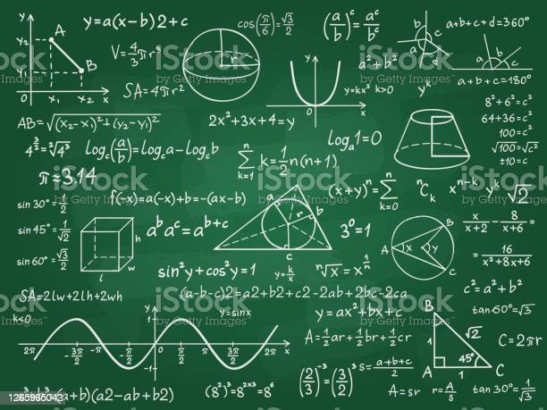

Math126: Basic Mathmatics II

Analytic Geometry in R2 , R3. Functions of one and several variables: Limit, continuity and differentiation. Chain rule, implicit differentiation. Differential calculus, optimization, Lagrange multipliers. The definite integral. The indefinite integral. Logarithmic and exponential functions. Techniques of integration: Integration by substitution, integration by parts, integration by partial fractions.